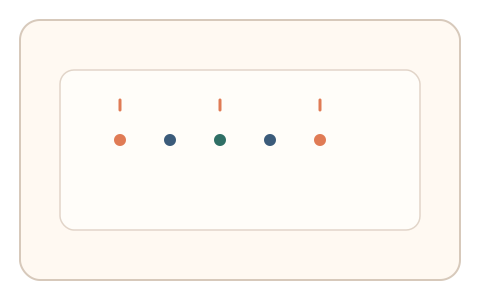
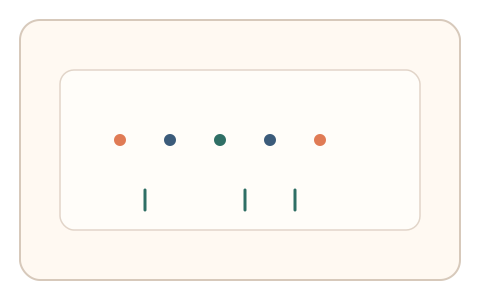
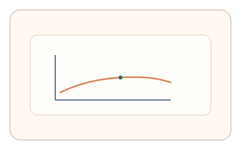

#69
视觉思考范式：Gestalt/对称/频率
已扩展
视觉节律分组
点阵按节律闪现，用户按感知节拍点击分组边界，利用节律位置与一致性验证真实性。
概念原文
点阵按时间节律闪现，用户按“感觉到的节拍”点击分组边界。记录节拍位置与一致性。
以时间分组偏好作为人类知觉签名。
研究背景
时间节律会引导人类对视觉事件进行分组，形成稳定的节拍边界与一致性模式。通过记录分组边界与节奏偏差可形成行为信号。
核心机制
- 点阵按一定节律闪现。
- 用户按“感觉到的节拍”点击分组边界。
- 记录节拍位置与一致性。
- 分析节律偏差与稳定性。
用户流程
- 步骤 1：用户看到点阵按节律闪现。
- 步骤 2：用户点击分组边界。
- 步骤 3：系统分析节拍位置并判定。
判定信号
节拍边界位置
人类对节律分组存在稳定的边界偏好。
节律一致性与偏差
真实节律感知具有一致的时序偏差。
判定逻辑
结合节拍边界与一致性分布判定；边界随机或无节律偏好判异常。
对抗面
- 脚本固定节拍位置点击
- 重放真实用户的点击序列
防御与缓解
- 随机化节律间隔与点阵位置
- 加入轻微节奏扰动降低模板化
- 叠加微时序与鼠标轨迹信号进行多信号判定
可达性与风险
提供更慢节律或替代任务模式，避免对节奏敏感用户造成负担。
- 节奏过快导致误差增大
- 不同设备刷新率影响节拍感知
可视化状态

状态 1：节律闪现
点阵按节律闪现。

状态 2：边界点击
用户点击感知到的分组边界。

状态 3：节律判定
分析节拍位置与一致性。
参考资料
Rhythm
说明节律感知与分组倾向。
Temporal grouping
说明时间分组与知觉组织。